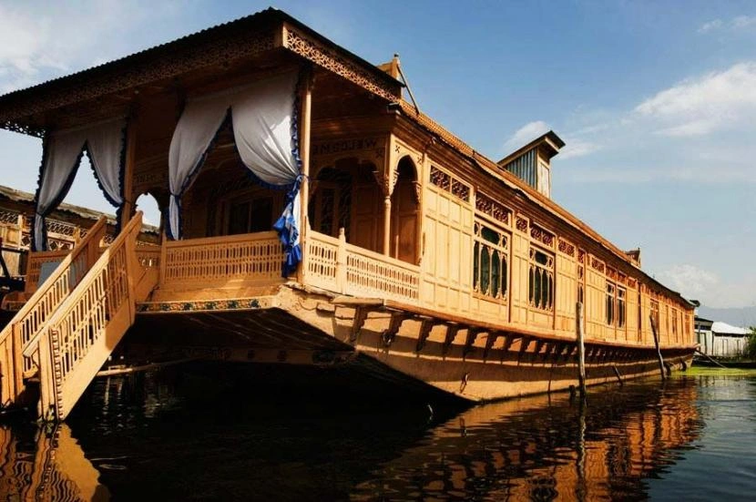
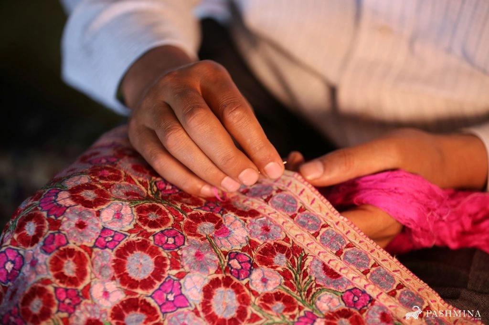
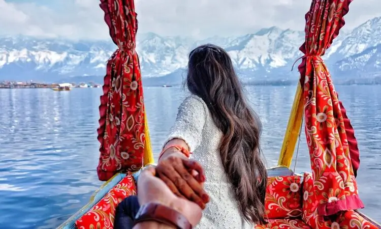
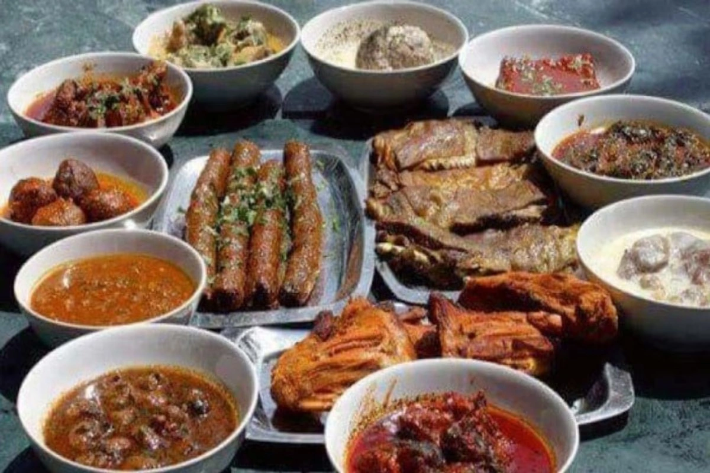
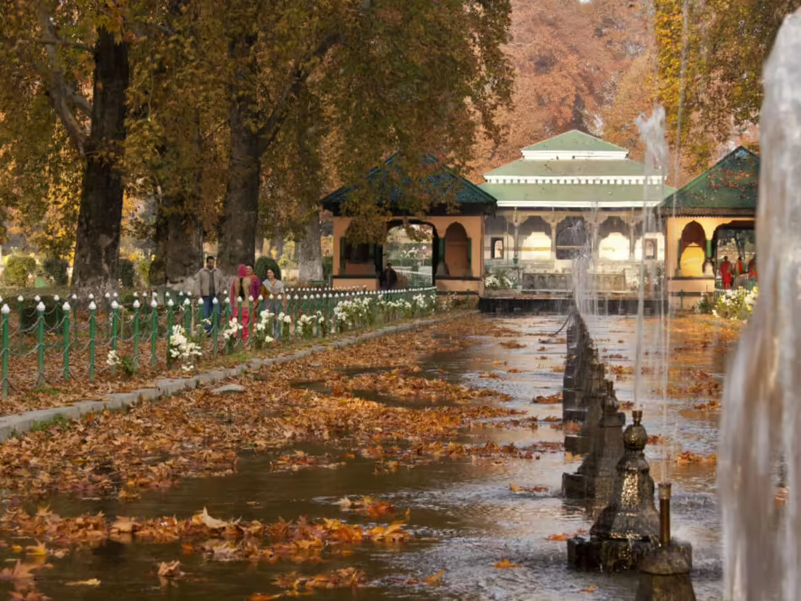
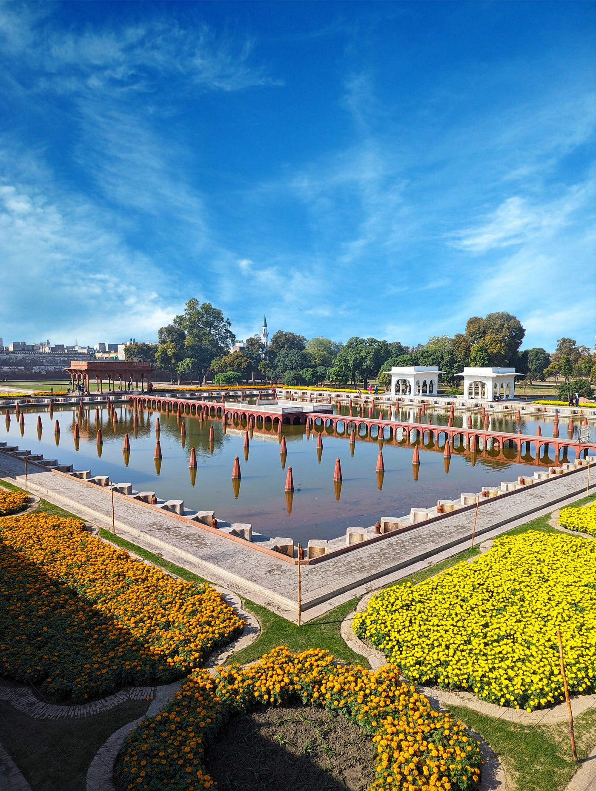
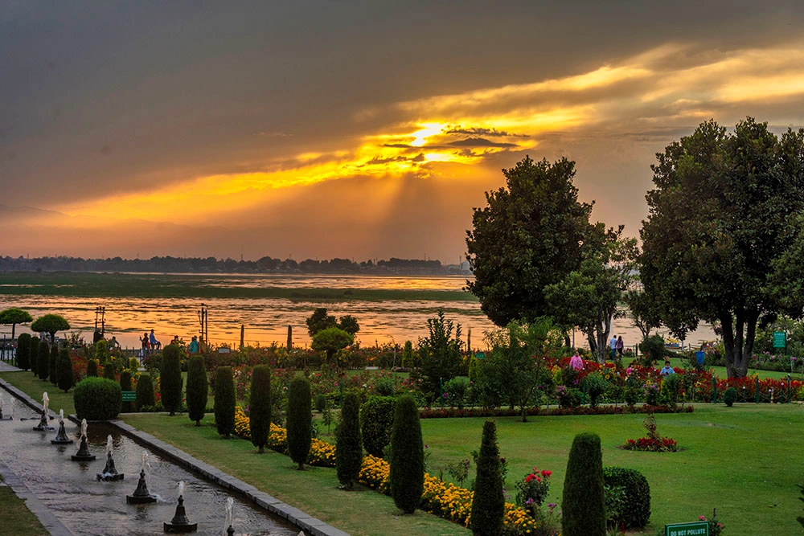
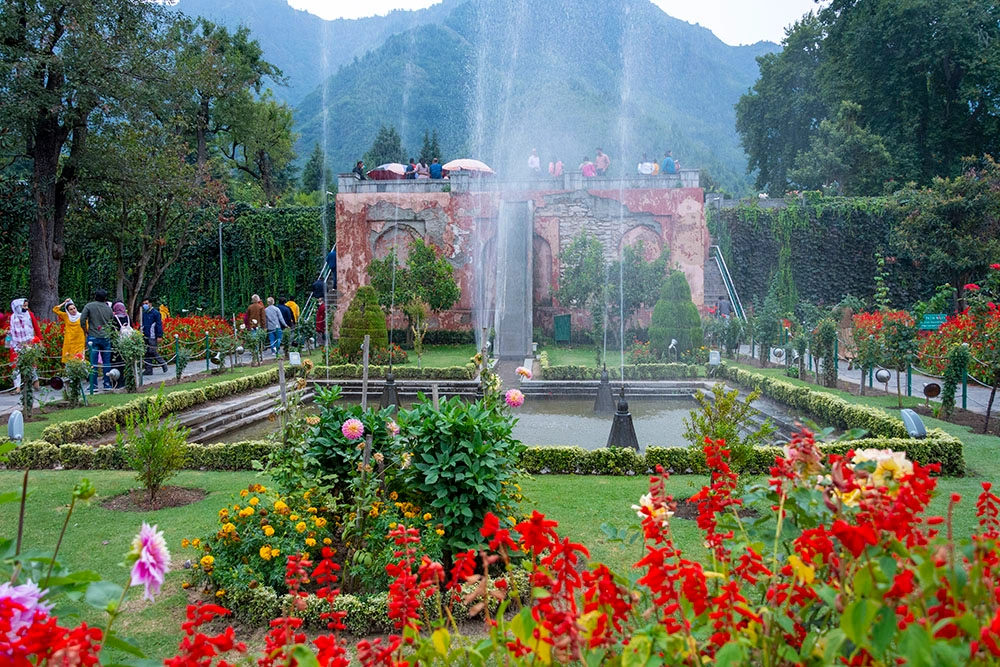

Nestled in the breathtaking Kashmir Valley of Jammu and Kashmir, Srinagar is one of the most beautiful and iconic tourist destinations in India. Surrounded by snow-covered mountains, serene lakes, Mughal gardens, wooden houseboats, and colorful valleys, Srinagar truly lives up to its title — “Paradise on Earth.” Famous for its natural beauty, Kashmiri culture, traditional handicrafts, scenic landscapes, and romantic atmosphere, Srinagar attracts honeymooners, families, photographers, backpackers, and nature lovers from all over the world. Whether you want peaceful shikara rides on Dal Lake, snow adventures in nearby valleys, or a relaxing escape amidst Himalayan beauty, Srinagar offers an unforgettable travel experience.
Why Srinagar is Famous Among Tourists



Srinagar has a rich history dating back thousands of years. It is believed that the city was founded by Emperor Ashoka during the 3rd century BCE. Over centuries, Srinagar became an important center for Buddhism, Hinduism, and later Islamic culture. The Mughal emperors were deeply fascinated by the beauty of Kashmir and developed several magnificent gardens in Srinagar, many of which remain major attractions today. Historically, Srinagar also became famous for:
Dal Lake is the heart of Srinagar tourism and one of the most beautiful lakes in India. Surrounded by mountains, Mughal gardens, and floating markets, the lake offers a magical experience.
Popular experiences at Dal Lake include:



Indira Gandhi Memorial Tulip Garden is Asia’s largest tulip garden and one of the biggest attractions during spring season. Thousands of colorful tulips bloom against the backdrop of snow-covered mountains, creating a spectacular view.
Hazratbal Shrine is one of the holiest Muslim shrines in Kashmir and an important spiritual attraction. Located beside Dal Lake, the shrine is famous for its peaceful white marble architecture and scenic surroundings.
AShankaracharya Temple is an ancient temple situated atop Shankaracharya Hill overlooking Srinagar city and Dal Lake. The temple offers:
Lal Chowk is the main market area of Srinagar famous for shopping, Kashmiri handicrafts, dry fruits, traditional clothing, and local food. Travelers often shop for:
Pari Mahal is a historic garden and architectural site offering spectacular views of Dal Lake and Srinagar city. The location becomes especially beautiful during sunset.
Tulip blooms and colorful gardens
Pleasant weather
Beautiful green landscapes
This is one of the best times to visit Srinagar.
Pleasant climate
Ideal for sightseeing and family vacations
Perfect for houseboat stays and shikara rides
Temperature ranges between 15°C to 30°C.
Golden Chinar trees
Scenic landscapes and cool weather
Perfect for photography
The autumn beauty of Kashmir is truly magical.
Snowfall and frozen landscapes
Romantic winter atmosphere
Snow-covered mountains and valleys
Ideal for snow lovers and winter travelers.
Srinagar Airport is well connected with major Indian cities including Delhi, Mumbai, Kolkata, and Chandigarh.
Srinagar is connected by scenic highways from Jammu and nearby regions.
he nearest major railway station is Jammu Tawi Railway Station, though rail connectivity is gradually expanding towards Kashmir Valley, latest being Vande Bharat Express to Srinagar.
Srinagar is not just a destination — it is an emotion filled with lakes, mountains, gardens, culture, and unforgettable beauty. From peaceful shikara rides and romantic houseboats to snowy valleys and colorful Mughal gardens, Srinagar offers experiences unlike anywhere else in India. Whether you are planning a honeymoon, family trip, photography tour, luxury vacation, or a peaceful Himalayan getaway, Srinagar promises memories that stay with you forever.
Planning a Kashmir trip becomes effortless with Wander and Wonder Travels. Our curated Srinagar-Gulmarg-Sonamarg-Pahalgham package is designed for travellers seeking the best of Kashmir Tourism.